Graphic design
Posters, ads and illustration: photo compositing in Photoshop and vector art in Illustrator, from pencil sketch to final.
Posters, a magazine cover, an ad and a logo
Work where the idea has to land in a second: photo compositing in Photoshop, type set to carry one message, and a logo that reads on light and dark backgrounds.
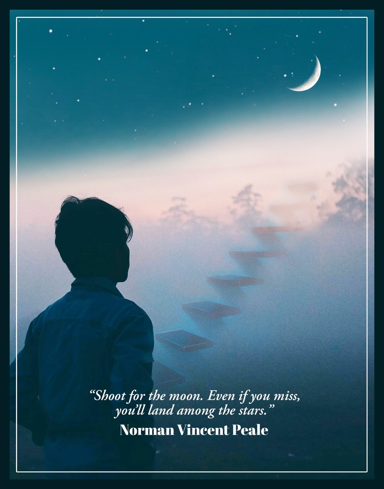
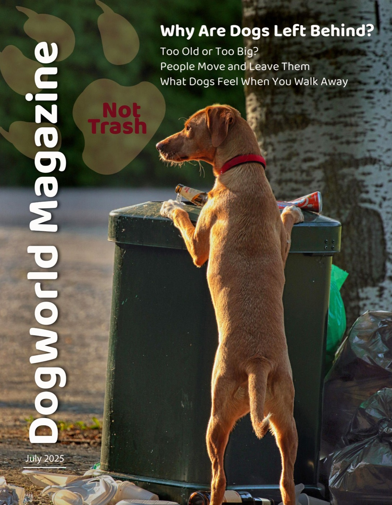
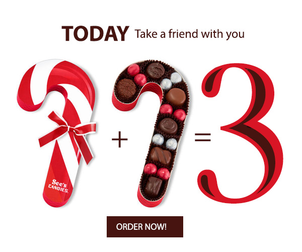
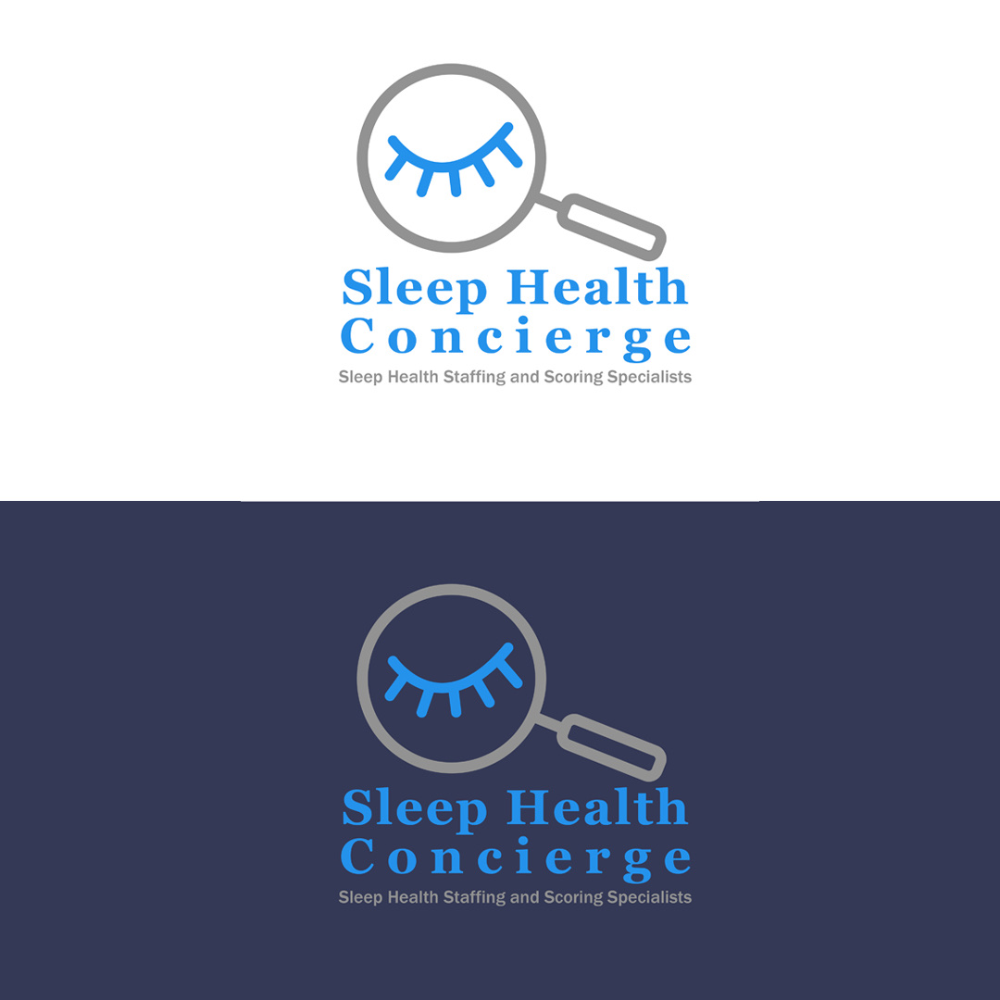
Sketch vs final
Every illustration here starts on paper. Drag the sliders to compare my pencil sketches with the finished vector art drawn in Illustrator.
National park sticker series
Each sticker pairs a park’s landmark with an animal that lives there, in one arched badge shape so the set reads as a family. I sketched six parks, drew Yosemite, Glacier and Grand Teton in Illustrator, then placed them on product mockups.
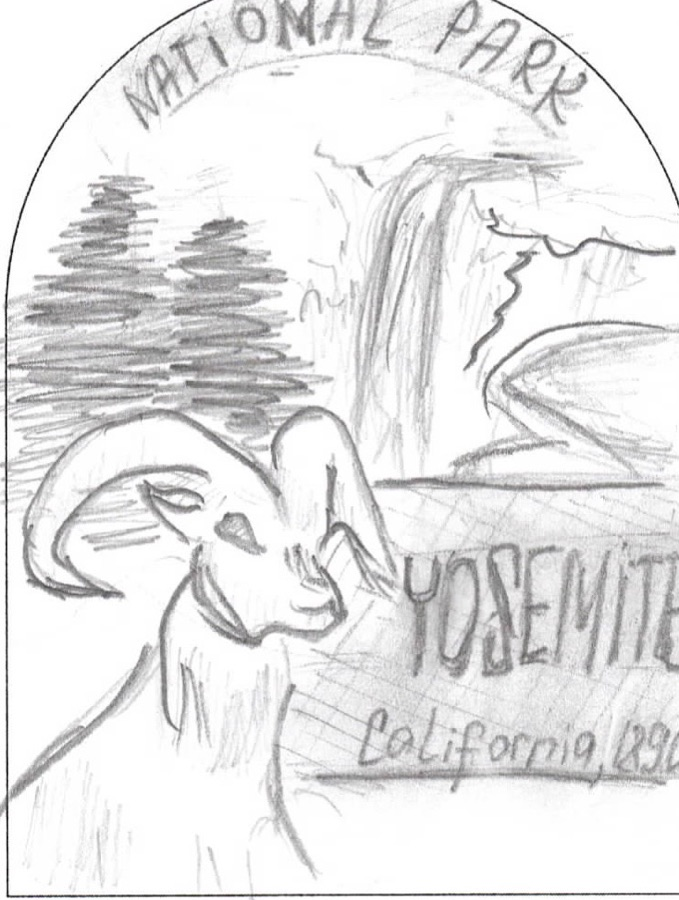
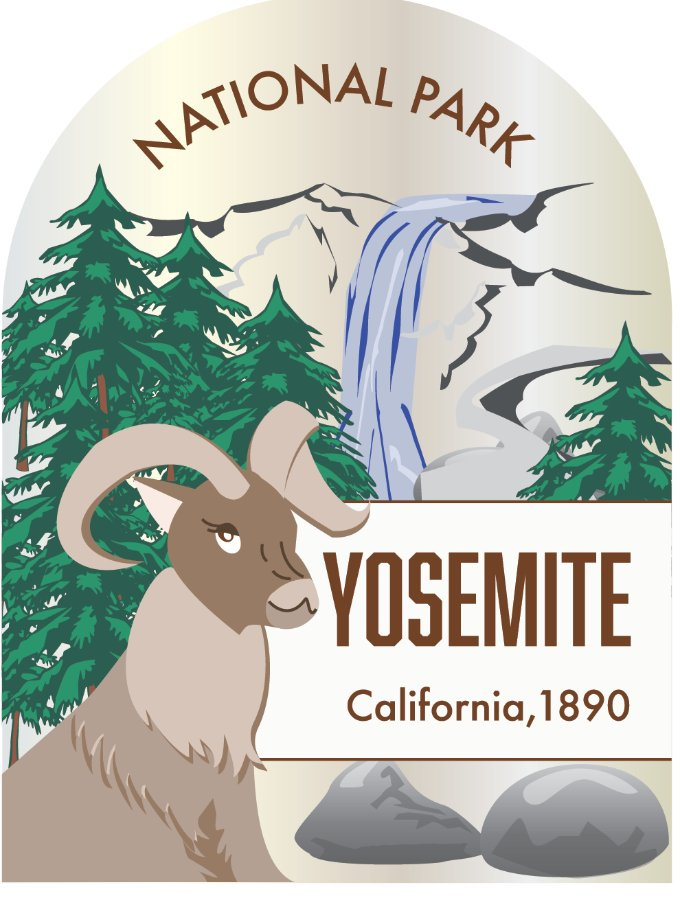
SketchFinal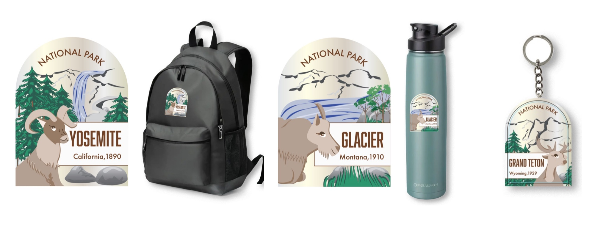
Sherlock Holmes cover series
A series idea for three Arthur Conan Doyle novels: a magnifying glass frames a clue from each story, with Holmes’s hat and pipe tying the covers together. All three became finished wraparound covers: front, spine and back with the blurb.
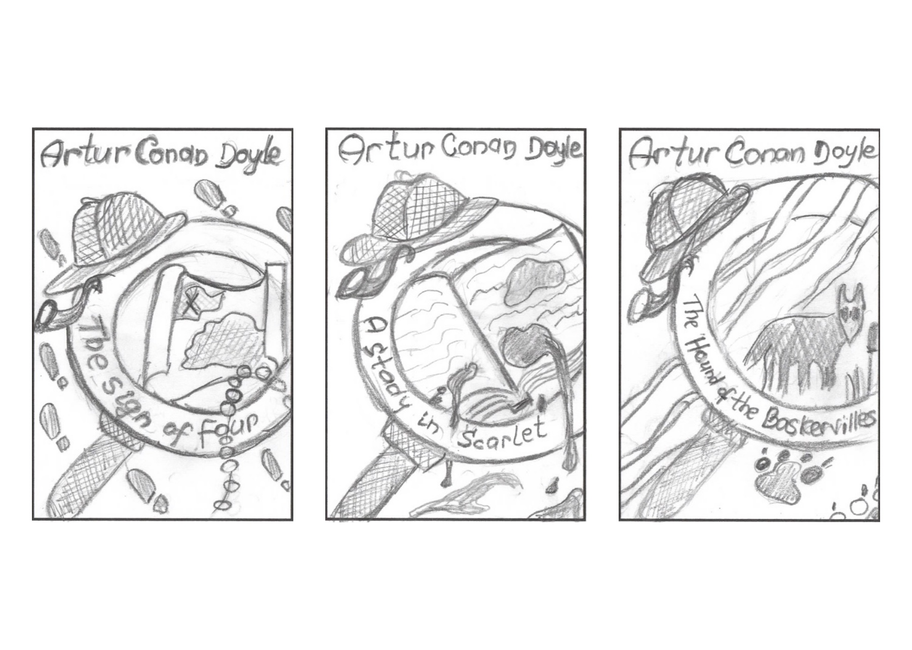
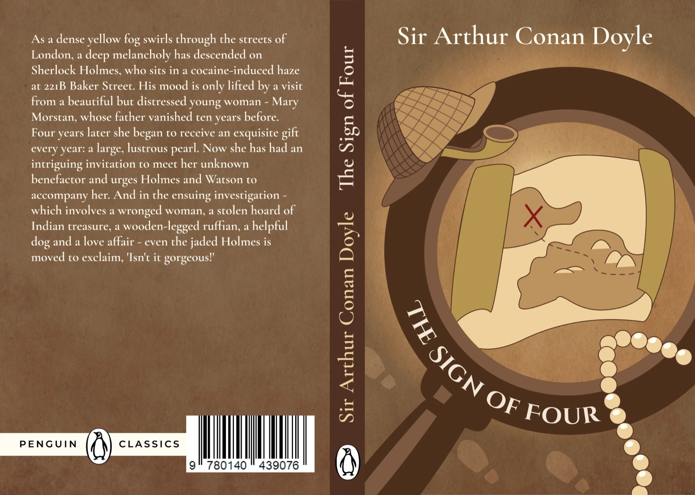
SketchFinal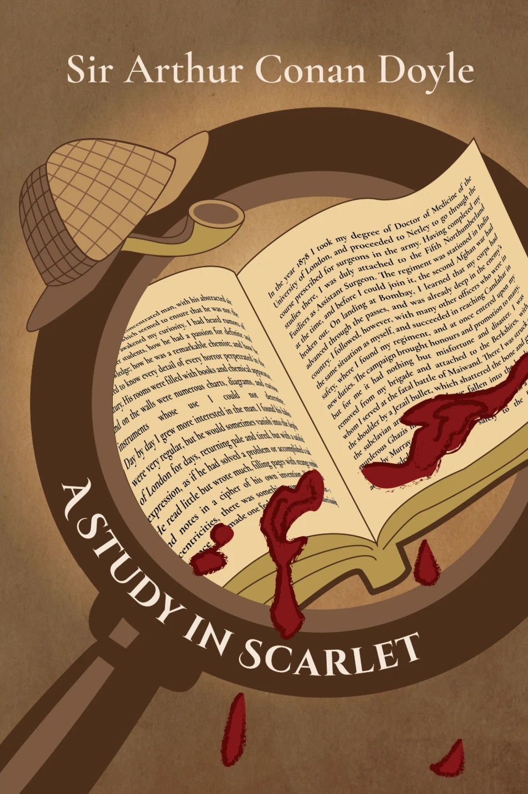
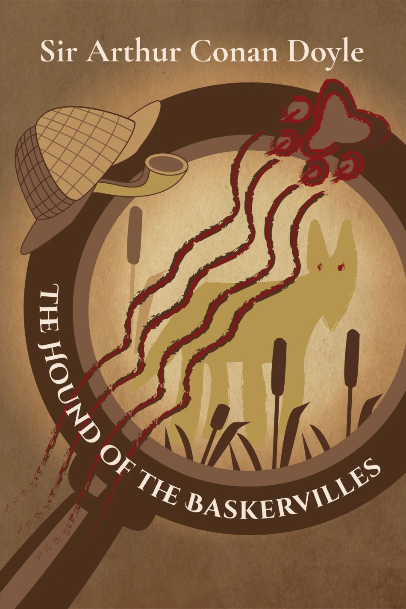
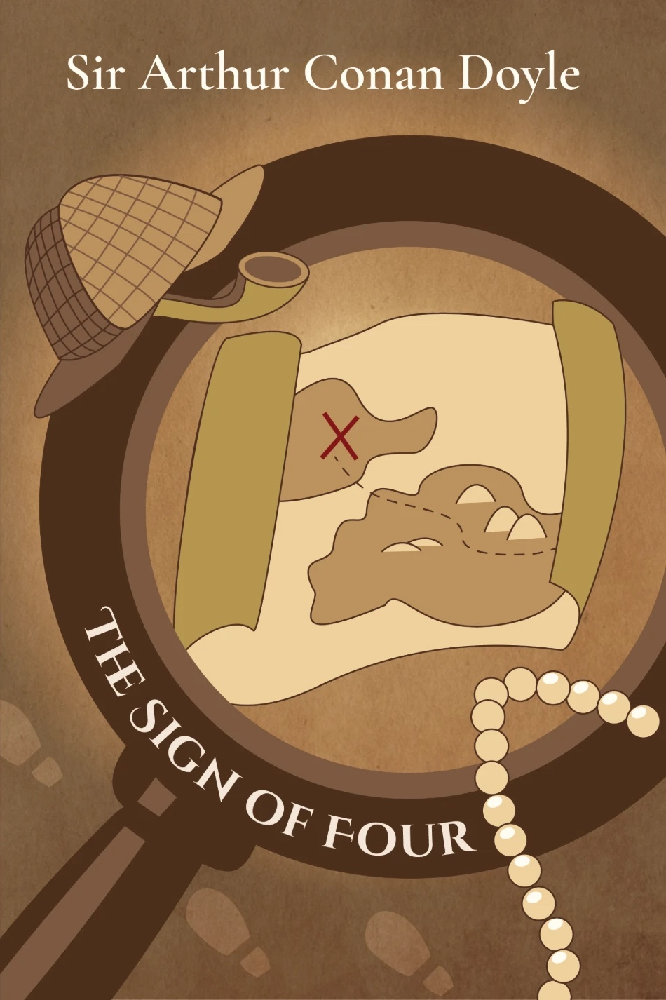
MEOW
A playful deck graphic, from pencil sketch to final: graffiti-style lettering with paw prints and a sleepy black cat.
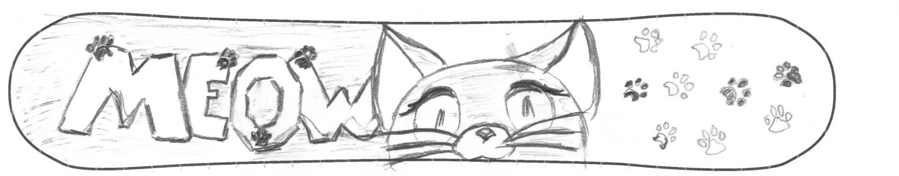
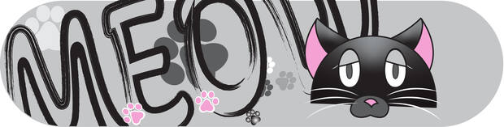